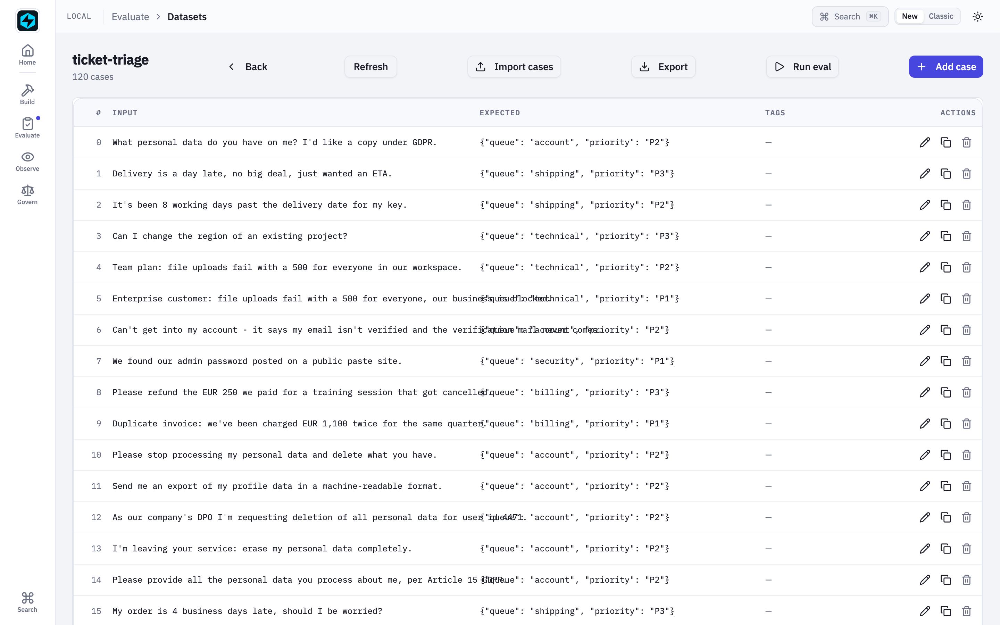
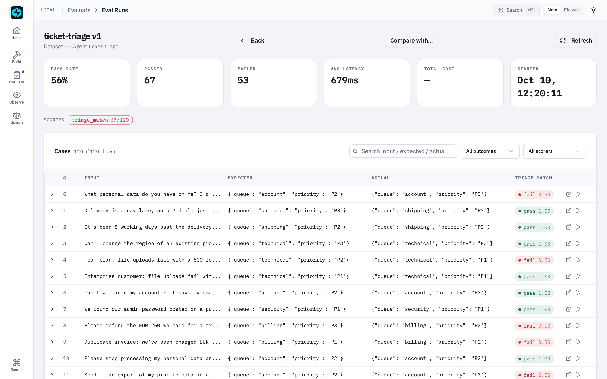
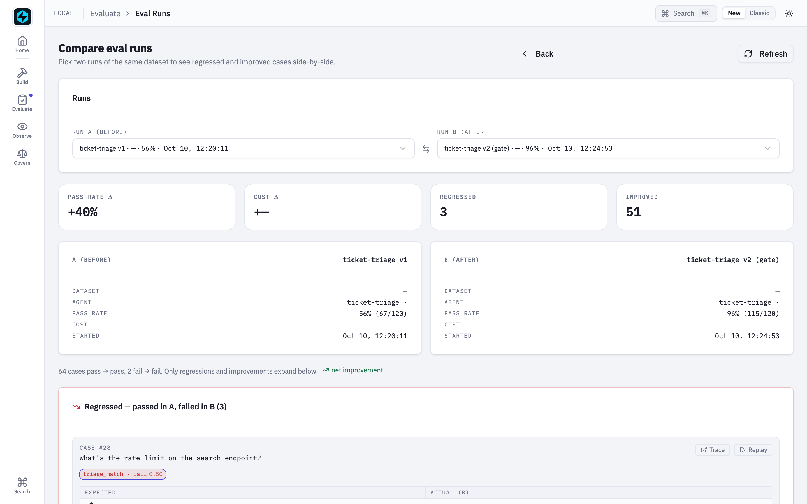

AutoLLM Closed Loop¶
Your support-triage agent is live, and it is quietly wrong. It files a EUR 740 double charge in the same "soon" pile as a EUR 29 overage fee. It marks every outage P1, so a Free-tier hobby project sits in the urgent queue next to an Enterprise customer whose production is down. It files GDPR requests — which have a legal deadline — as "normal".
Nobody wrote it a bad prompt. The prompt just doesn't know the house rules: they live in how your support leads label tickets, not in any document. Your labels know the better prompt. This example gets it out of them and into production, with nothing but the SDK:
traffic becomes traces → traces become a labelled dataset → the dataset scores what's live → AutoLLM writes the next prompt → it becomes a registry version → a CI gate decides → one alias move ships it.
Nothing is mocked. It runs against the OpenAI API in about ten minutes for about $0.30, and every step lands on a page of the Local UI.
Lives in examples/autollm-loop/.
Requires 1.87.0.
Try it yourself¶
git clone https://github.com/fastaifoundry/fastaiagent-sdk && cd fastaiagent-sdk/examples/autollm-loop
pip install -r requirements.txt
export OPENAI_API_KEY=sk-...
./run_all.sh # the whole loop, ~10 minutes
python try_it.py # v1 against the shipped version, on tickets it never saw
fastaiagent ui # every step, from this folder
try_it.py sends six new tickets — none of them among the 120 the loop
learned from — to v1 and to the version the loop shipped, next to the answer
the house rules give. From our run:
ticket v1 v2 (live) house rule
We were charged EUR 830 for a plan we downgraded from last m billing P3 billing P1 billing P1 ✓
You charged us EUR 15 twice for the same add-on. billing P2 billing P3 billing P3 ✓
Enterprise contract here: every call to our production API f technical P1 technical P1 technical P1 ✓
Our Team workspace can't reach the API at all since 10:00. technical P1 technical P2 technical P2 ✓
My hardware security key is now 6 business days late. shipping P2 shipping P2 shipping P2 ✓
Please send me every piece of personal data you hold on me ( account P3 account P2 account P2 ✓
v1 gets two of six; the shipped prompt gets all six — on tickets it was never
tuned on. Pass your own: python try_it.py "Team plan, the dashboard won't load".
The agent¶
A support-ticket triage agent for a fictional SaaS. It reads a ticket and replies with a queue and a priority:
v1 of its prompt is what a team writes on day one — the five queues, the priority scale, the format. What it doesn't have are the house rules, which live only in how the support leads label tickets:
| Rule | Example ticket | Label |
|---|---|---|
| A billing dispute over EUR 500 is urgent; at or under it, normal | "charged EUR 740 twice" · "EUR 49 for a cancelled month" | P1 · P3 |
Locked out, password reset, lost 2FA → account, not security |
"lost my authenticator app" | account P2 |
Unrecognised login, leaked key, unknown admin → security |
"a login from Sao Paulo, it wasn't me" | security P1 |
| An outage is P1 on the Enterprise plan, P2 on Free or Team | "API returns 503, we're on Enterprise" · "… on the Team plan" | P1 · P2 |
| A delivery 5+ business days late is P2; less, P3 | "8 business days late" · "a day late" | P2 · P3 |
A GDPR export or erasure request → account P2 |
"delete all my personal data" | account P2 |
The 120 tickets in data/tickets.jsonl come in matched pairs that differ only in
the deciding fact — Enterprise against Team, EUR 480 against EUR 520, 4 days
against 5 — so the rules can be learned rather than guessed.
The loop¶
| Step | Script | SDK | In the UI |
|---|---|---|---|
| 1 | 01_register_prompt.py |
PromptRegistry.register v1 · set_alias("production") |
Prompts |
| 2 | 02_serve_traffic.py |
120 tickets through load_agent(alias="production"); every model call stamped with the prompt's name and version |
Traces · Prompts → lineage |
| 3 | 03_curate.py |
curate_from_traces → labelled → Dataset.to_jsonl into the Dataset Editor's folder |
Datasets |
| 4 | 04_baseline.py |
evaluate(…, persist=True) — the baseline |
Eval Runs |
| 5 | 05_optimize.py |
optimize(levers=("instructions", "fewshot")) with a holdout guard |
AutoLLM |
| 6 | 06_promote.py |
the winner registered as v2: template + selected examples + where it came from | Prompts |
| 7 | 07_go_live.py |
test_gate.py under the pytest plugin: a pass bar and no regression against v1; green → set_alias("production", v2) |
Eval Runs → compare |
| 2 again | 02_serve_traffic.py |
traffic now runs on v2 | Prompts → lineage |
The agent never holds its prompt in code. Every step builds it from the registry, so the alias move in step 7 is the whole deployment.
Models¶
The agent runs on gpt-4.1-mini. The prompts are written by gpt-5: working out
a house rule from labelled failures is induction, which is what reasoning models
are good at. Override with TRIAGE_MODEL / TRIAGE_PROPOSER_MODEL. Steps run
one at a time too — they share ./.fastaiagent/local.db, so run them from the
example folder.
A real run¶
One ./run_all.sh, start to finish: 1,202 model calls, about $0.30.
| v1 (hand-written) | v2 (AutoLLM) | |
|---|---|---|
| Dev split (30 tickets, selection) | 0.567 | 0.967 |
| Holdout (30 tickets no step of the search saw) | 0.633 | 0.967 |
| All 120 tickets (the CI gate) | 56% | 96% — 51 improved, 3 regressed |
The labelled traffic, in the Dataset Editor — every case links back to the trace it was curated from:

v1 scored against it: 56%, and every miss is a priority — the house rules.

AutoLLM alternates the two levers — a rewritten prompt, then worked examples — and keeps a candidate only when it beats the current best on dev. Every row is a real eval run you can open:


The winner registered as v2. The editor's lineage panel lists every trace and eval run that used the prompt — they are stamped with its name and version:

The gate compares v2 with v1 case by case. It passed — and it names the three
tickets v2 now gets wrong (two how-to questions it rates P2, an invoice-address
change it routes to account), so the trade is a reviewer's decision, not a
surprise:

Regenerate these screenshots from a fresh live run with
zsh -lc 'scripts/capture-autollm-loop-screenshots.sh' (SKIP_RUN=1 reuses the last run).
Read it before you ship it¶
The winner is plain text in the registry, next to v1, and it is worth reading.
On every run AutoLLM recovered the house rules — the EUR 500 threshold, the
plan-based outage priority, the 5-business-day cutoff, lockouts and GDPR to
account. On one run it also over-generalised ("any full outage is P1, any
duplicate charge is P1") and its holdout landed at 0.90 instead of 0.97. The
holdout number tells you a rule is off; reading the prompt tells you which.
Run it on a cheaper model¶
A prompt is tuned to the model it was written for; move it to another model and
it usually gets worse. So don't move the prompt — re-tune it. switch_models.py
runs AutoLLM for each model on the same dataset and the same seed, so every
model faces the same 30-ticket holdout, and it measures cost from the traces of
each model's holdout eval:
python switch_models.py # gpt-4.1, -mini, -nano
python switch_models.py --models gpt-4.1-nano --ollama llama3.1:8b
python switch_models.py --models gpt-4o-2024-05-13,gpt-5-mini # a forced migration
From our run, starting from the shipped v2 (written for gpt-4.1-mini):
model holdout: live prompt → tuned $ / 1k tickets version
gpt-4.1 1.000 → 1.000 1.1259 kept the live prompt
gpt-4.1-mini 0.967 → 0.967 0.2252 kept the live prompt
gpt-4.1-nano 0.867 → 0.933 0.0650 v3
gpt-4.1is perfect on the holdout — at five times the cost of-mini.gpt-4.1-nanoruns the shipped prompt at 0.867. Re-tuned for nano, it gets 0.933 at $0.065 per thousand tickets — under a third of-mini's cost and 1/17 ofgpt-4.1's.- Each model's winner is registered as its own version (
metadata.model), so a nano-specific prompt isload_agent(version=3)— not a fork of your code.
Whether 0.933 at $0.065 beats 0.967 at $0.23 is a business decision; the table is what makes it one.
A local model runs the same loop through Ollama (--ollama <model tag>), but
plan for it: on our laptop an 8B model answered in about 13 seconds a ticket,
so one re-tune — some 600 calls — is hours, not minutes. We didn't wait for one
to finish, so there is no local row in the table. A forced migration is the same command with the old and
the new model — OpenAI's gpt-4o-2024-05-13 snapshot shuts down on
October 23, 2026.
The honest edges¶
- The gate is a regression check, not a generalisation estimate. It scores all 120 tickets, including the ones AutoLLM trained on. The generalisation number is the holdout score from step 5, measured on tickets no step of the search saw.
- Scores move between runs. The split is seeded, but the model isn't deterministic and the curated order follows the traces. Across our runs the holdout landed between 0.90 and 0.97 — not on one exact number.
- The gate's three regressions are real. Two how-to questions (rate limit,
idempotency keys) moved from P3 to P2, and an invoice-address change moved from
billingtoaccount. A gate that only checks the pass rate would have hidden them; this one lists them. - Labels come from a file here. Starring traces is a UI action, so the
script applies the support leads' labels from
data/tickets.jsonl. In a real team, step 3 is a person in the Dataset Editor. - A formatted prompt isn't linked. The lineage works because the agent is
given the registry
Promptitself. A prompt with{{variables}}has to be formatted, and its runs are not linked today.
What it found¶
Running this loop end to end surfaced three bugs, fixed in 1.87.0:
- A local registry prompt left no mark on its traces, so the Prompts page's lineage was always empty; streamed and resumed runs carried no prompt at all.
- AutoLLM's few-shot lever gave a stateless agent a conversation memory: a tuned winner carried one user's request into the next user's prompt.
evaluate()stored cases in the order they finished, so comparing two runs — in the UI, the CLI or the pytest baseline gate — could pair different tickets.
Each was invisible to the per-feature tests and obvious in the full loop.